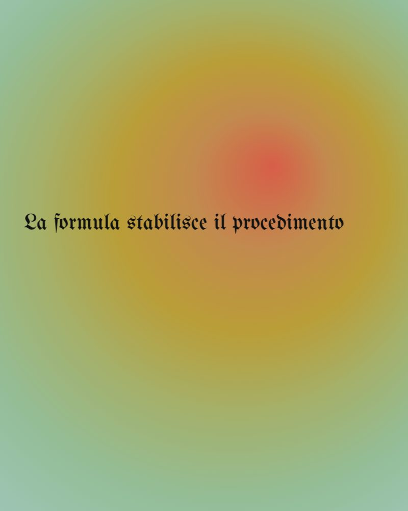
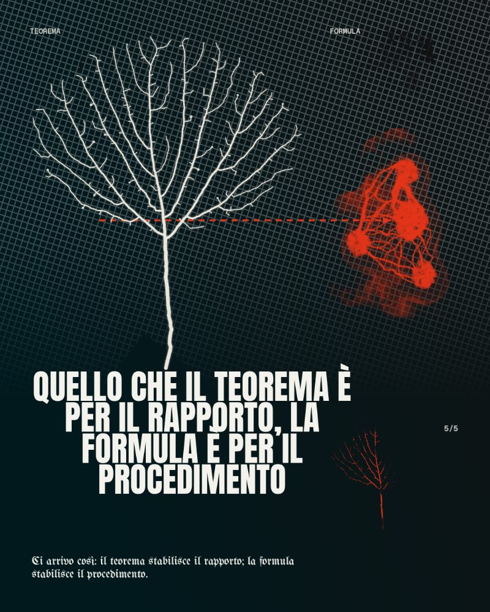

Quello che il teorema è per il rapporto, la formula è per il procedimento

1/5 · Quello che il teorema è per il rapporto

2/5 · Ancora
Mi viene un'analogia: cambia il materiale (costruzione, progetto) ma il gesto è lo stesso: l'assemblaggio e la definizione fanno la stessa cosa: è una rima, non una prova.

3/5 · Il teorema stabilisce il rapporto

4/5 · La formula stabilisce il procedimento

5/5 · Quello che il teorema è per il rapporto, la formula è per il procedimento
Ci arrivo così: il teorema stabilisce il rapporto; la formula stabilisce il procedimento.
Azzardo: quello che il teorema è per il rapporto, la formula è per il procedimento
da dove viene la formula?